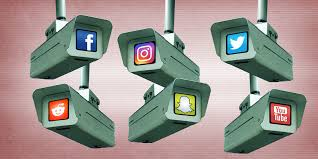

The Digital Panopticon
Foucault highlights the problematic idea of the panopticon, drawing
relation from the structure made for prisons to surveillance and domination
in the outside world. Foucault’s analysis is important in respect of today’s
digital age. Any action on the internet poses the risk of privacy invasion
at the click of a button, making monitoring of populations easier than ever before.
Increased growth of new technology means an increased interconnectedness with one another
at the risk of undermining self-determination. It forces us to question the role of panopticism
in today’s digital landscape.
Foucault’s analysis is emblematic
of an overarching theme in the digital world, where surveillance techniques are continually
expanding and mutating to increase control of populations. He writes “… the major effect of
the Panopticon: to induce… a state of conscious and permanent visibility that assures the
automatic functioning of power “(Foucault 6). The Panopticon, a large tower like structure
in the middle of the prison, was constructed to keep watch over prisoners. After time the
tower will need not be manned due to the self-regulation that it instills, the constant
fear if being watched maintains the prisoner’s behavior even in the lack of an
actual guard being in the tower. This is strikingly like modern online surveillance
techniques.

A great example is social media. Platforms, such as Facebook, Instagram,
and Twitter, employ techniques to regulate how users interact with one another.
Users are constantly reminded that their interactions, posts, and actions are
being monitored through things like business metrics. Snapchat and Instagram
have story views, so the user can directly see who views their posts/stories.
This feature deters certain users from viewing stories in fear of being called
out for their behavior, even though there is no guarantee that a user will see a
certain individual viewed their story. Other visibility metrics including likes,
comments, and shares create a constant sense of observation and scrutiny of users.
Foucault writes “… the Panopticon was also a laboratory; it could be used
as a machine to carry out experiments, to alter behaviour, to train or correct
individuals” (Foucault 8). The panopticon was welded to alter behavior, not to
just regulate it. This idea is integral to the survival of the digital world.
Users must alter their behaviors online to deter the invasion of their privacy
by dominating powers. Social media platforms use visibility metrics to incentivize
users to act differently in order to increase views, likes, comments. This alters
the ways in which the user interacts with the platform; while not entirely
bad, this form of surveillance is wielded to maximize use of social media platforms.

Even though social media surveillance techniques are prevalent in the
modern social landscape, writer Tim Rayner argues that social media can be a
way for users to shape their own subjectivity. He writes “When we seize on a
moment and ‘package’ it in the form of a 140-digit tweet, we do more than
just create an item of content to share with our friends. We hone our view on
the world, and in the process, define ourselves as persons, identities, and subjects”
(Rayner). This in a sense becomes liberatory in a way that is unachievable in many
social communication forums. As users we share, like, and repost content that fits
our personal views and aids in processing ourselves as subjects within the broader
scheme of society.
A second example of surveillance that remains prevalent in the digital
world, is government surveillance programs. Mass surveillance initiatives
involve the monitoring of online communications. Citizens are unaware of the
full extent to which the government intrudes on their online presence, but the
looking fear of surveillance deters certain activities.
Countries around the world are participating in surveillance programs
that regulate their citizens. An article by Freedom House describes
“Authorities in Iran have boasted of a 42,000-strong army of volunteers
who monitor online speech… Similarly, the ruling Communist Party in China
has recruited thousands of individuals to sift through the internet and
report problematic content and accounts to authorities. (Shahbaz and Funk).
As Shahbaz and Funk detail, there is a prevalent domination at play. Users
in countries fear being reported for their online presence. Semptian, a Chinese tech
firm has boasted its Aegis surveillance system wields the capacity to “store
and analyze unlimited data.” Claiming to be monitoring over 200 million
individuals in China. There is a constant state of ruling over online individuals
and countries are starting to wield the Virtual Panopticon to
regulate interactions through all forms of internet usage. As
technology grows, the means through which individuals are regulated
online will only mutate and become more aggressive to ensure they
abide by principles higher beings set forth.
In the digital landscape, Foucault's insights on surveillance offer a
poignant lens through which to examine the pervasive nature of control in
online spaces. The realization that every digital action carries the
potential for regulation, often unbeknownst to the user, underscores the profound
impact of technology on our autonomy. As our interconnected world continues
to evolve, this system of control becomes increasingly potent, transcending
geographical boundaries. The growth of technology brings with it not only
opportunities for connectivity but also challenges to individual privacy and
autonomy. It prompts us to critically assess the delicate balance between the
benefits of technological progress and the imperative to safeguard personal
agency in an era where digital actions are subject to unseen forms of scrutiny
and regulation.
Foucault, M. (2008). “Panopticism” from Discipline & Punish: The Birth of the Prison. In Race/Ethnicity: Multidisciplinary Global Contexts (Vol. 2, pp. 1–12). essay, Indiana University Press.
Rayner, T. (2012, November 11). Foucault and Social Media: Life in a virtual panopticon. Philosophy for change. https://philosophyforchange.wordpress.com/2012/06/21/foucault-and-social-media-life-in-a-virtual-panopticon/
Shahbaz, A., & Funk, A. (n.d.). Social Media Surveillance. Freedom House. https://freedomhouse.org/report/freedom-on-the-net/2019/the-crisis-of-social-media/social-media-surveillance